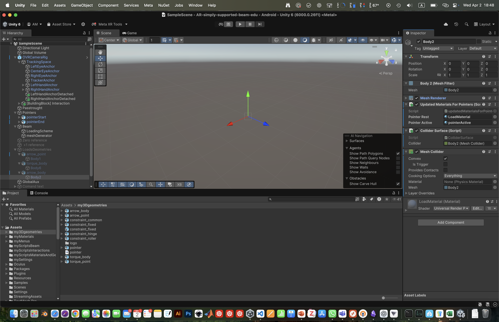
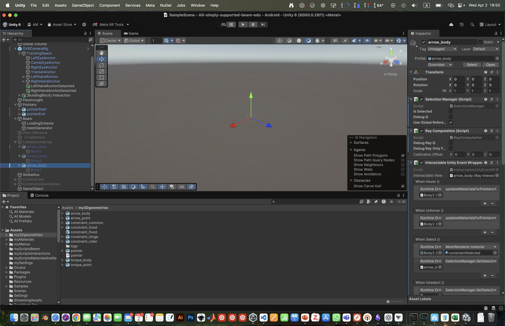

Geometries
Some usefull 3D geometries are included in the project. They are located in the folder Assets/my3Dgeometries. The included geometries are the intial pointers, the force (arrow point and body) and several constraints:
Hinge
Roller
Fixed
3D models
Note that all the goemetries miss the common “cylinder” because it is used as a second object to marker the position.
Similarly, the force is splitted into body and arrow head.
Sizes and positions
- Each imported 3D geoemtriy is treateed as a Unity prefab with attached:
UpdateMaterialProperties.csscript to update the material properties based on the RayCasting.Collider surface and script for the Meta Ray Interaction
SelectionManager.csscript to manage the selection of the objectRayComputation.csscript to manage the ray casting and the interaction with the object.InteractableUnityEventWrapper.csscript to manage the interaction with the object.Movements script like
LoadMovementorConstraintMovementto manage the movement of the object.
3D geometry:
{kind=link}
Parent object:
{kind=link}
Scale adjustment
Each geoemtry is normalized and then rescaled proportianlly to the beam section.
public void NormalizeObject(GameObject obj, char? flag = null)
{
// Find the MeshFilter in the object or its children
MeshFilter meshFilter = obj.GetComponentInChildren<MeshFilter>();
if (meshFilter != null)
{
Bounds bounds = meshFilter.mesh.bounds;// Get the mesh bounds in local space
if (largestDimension > 0)
{
// Compute the scale factor to normalize the largest dimension to 1
float scaleFactor = 1.0f / largestDimension;
// Rescale the object
meshFilter.transform.localScale *= scaleFactor;
Quaternion targetRotation = Quaternion.Euler(-90, 0, 0); // Rotate 90° around X-axis
meshFilter.transform.rotation = targetRotation;
Renderer renderer = obj.GetComponentInChildren<Renderer>();
SetPointerDimensionScaled(pointerDimension * scaleFactor, obj);
if (renderer != null && loadsMaterial != null)
{
// Assign the material
renderer.material = loadsMaterial;
Debug.Log($"Assigned custom material to {obj.name}");
}
else
{
Debug.LogWarning($"Renderer or custom material not found for {obj.name}");
}
}
else
{
Debug.LogError($"Bounds size is zero for {obj.name}. Cannot normalize.");
}
}
else
{
Debug.LogError($"No MeshFilter found in {obj.name} or its children.");
}
}